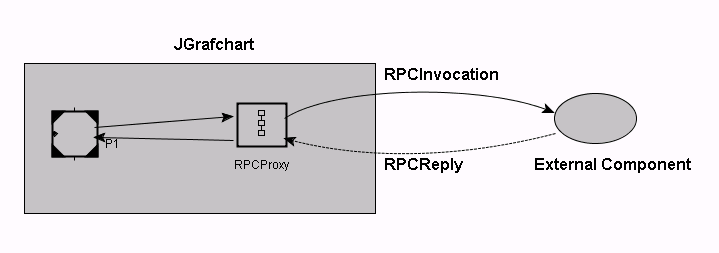

When JGrafchart should call an RPC in another component/toolbox it is convenient to use a Grafchart procedure as a proxy for the remote procedure according to the example below.

The proxy procedure, which may have the same name as the external procedure, generates an RPCInvocation message using a local XML Message Out object, awaits the RPCResponse message using a local XML Message In object, extracts the reply parameters, and returns the reply to the context of the procedure step.
Complete examples of calling external procedures from JGrafchart can be found in the on-line tutorial.